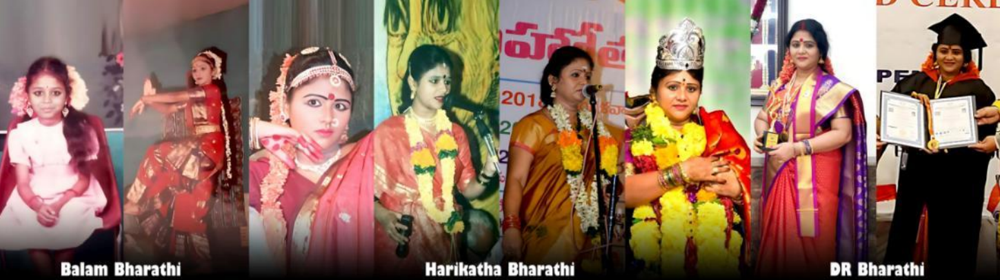
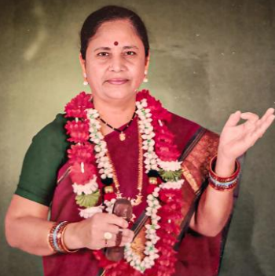
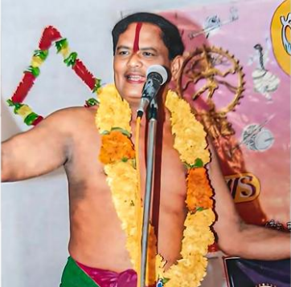

Biography
About Dr. Sappa Bharathi Bhagavatarini
A bilingual profile page with career background, family roots, education, teachers, major performance milestones, and recognition.

Introduction
My name is Dr. Sappa Bharathi Bhagavatarini. I belong to Eluru District, Eluru, Andhra Pradesh. I am a Harikatha performer and have conducted Harikatha performances in various states and regions, totaling over 5000 presentations.
I received an A-Top Grade (highest grade) on 08-06-2012 at the All India Radio, Vijayawada Center.
Some of the Harikathas I narrate include the complete Shri Yadartha Ramayana, the 18 parvas of the Shri Mahabharata, the life story of Shri Masvirat Potuluri Virabrahmendra Swami Kalajnana Sahita Sampurna Jivita Charitra, Bhakta Ambarisha, Shri Venkatachala Vaibhavam, Shri Valli Subrahmanyeswara Swami Vari Kalyanam, Shiva Leelalu, Girija Kalyanam, and Shri Shirdi Sai Baba Jivita Charitra.
Parents
My parents, Mrs. Balam Nagamani Bhagavatarini and Mr. Balam Suryachandra Rao Bhagavatarulu, are both accomplished Harikatha artists. My father is a retired police officer and holds a Harikatha Art Diploma from Sri Potti Sriramulu Telugu University, Hyderabad.


Education
I started my education from first grade and continued till seventh grade at Tanuku, Medabadi School. Later, I pursued my studies at a girls' school up to the eighth grade. After that, I joined the Sri Sarvaraya Harikatha Pathasala in Kapileshwaram, West Godavari District, under the administration of the late Balusu Prabhakar and Mrs. Rajarajeshwaramma.
I completed my 12th class at the Sri Sarvaraya Harikatha Gurukul Kala Shala. During my time there, I studied Harikatha for 6 years. Later, I completed my B.A. at Andhra University, Visakhapatnam, and my M.A. in Telugu at Sri Venkateswara University, Tirupati.
Teachers Who Taught Me
- Music: Trained by Brahmashree Mahendrawada Kameswara Rao Garu.
- Sanskrit: I studied under Sriman Angara Singaracharyu Garu.
- Telugu: I trained under Sri Medini Satyanarayana and Kumari Pappu Satyavathy Garu.
- Dance: I studied under Shri Kala Krishna Garu, Kumari Badampudi Lakshmi Garu, and Brahmashri Pasumarthi Srinivasa Sharma Garu.
- Rhythm: I practiced under Shri Vakkalagadda Nageswara Rao Garu.
- Harikathas: I trained under Brahmashri Akka Peddi Srirama Sharma Bhagavathulu Garu, Brahmashri Tanuku Viswanatham Bhagavathulu Garu, Sri Ganta Gopalao Bhagavathulu Garu, Smt. Uma Chaudhary Bhagavatarini Garu, and Sri Pulugu Veeraya Bhagavathulu Garu.
- Sanskrit Harikathas: I studied under Shriman Nallan Chakravartula Krishnamacharyu Garu.
My Career Journey
I have been receiving education in Harikatha since the age of 12. I gained recognition at the Vijayanagaram worship festivals of Shri Mad Ajjada Adibhatla Narayanadasu Garu, where I received major appreciation in Harikatha competitions.
I hold the distinction of being the first to don the prestigious Rajita Kankanam in the Harikatha presentations conducted at the Sri Sarvaraya Harikatha Pathashala, where I received my education. I have performed Harikatha songs not only in Telugu but also in Sanskrit.
Some of the prominent regions where I have delivered Harikatha performances include Haryana, Orissa, West Bengal, Karnataka, Tamil Nadu, and Madhya Pradesh, including major literary, devotional, and cultural stages.
Andhra Pradesh
Tirumala Nadaneerajanam, Sri Venkateswara Bhakti Channel, Sri Alivelu Mangapuram, Nagalapuram, Kanipakam, Srisailam, Srimadvirat Potuluri Veerabrahmendra Swami Devasthanam, Brahmamgari Matham, Vijayawada Sri Indrakiladi Kanakadurgamma Devasthanam, Dwarakatirumala, Bhimavaram, Annavaram, Rajamahendravaram, Koti Lingala Revu, Anand Kala Kendram, Kakinada, Pancharama Kshetras, Visakhapatnam Kalabharati, Srikakulam Bapuji Kala Mandir, Bejjiputtuga, and Anakapalli temple venues.
Telangana
Hyderabad Ravindra Bharati, Tyagaraya Gana Sabha, Shankar Math, Vemulawada, Yadagirigutta, Sirisilla, Suryapet, Palvancha, and Khammam TTDC Kalyana Mandapam are among the key Telangana venues where I performed.
Awards
Watch Award Playlist- National Bangaru Nandi Award – 2023, G.C.S Valluri Foundation, Telangana Government Department of Language and Culture, Ravindra Bharati, Hyderabad.
- Honoris Doctorate – 2023, International Peace University, Pondicherry.
- Bharat Kala Ratna Award – 2023, International Peace Council, Pondicherry.
- Swarna Kankana Gana Sanmana – 2010, Sri Garikapati Arts Theaters, Eluru.
- Rajitha Kirita Dhara – 2019, Sri Garikapati Arts Theaters, Eluru.
- Suvarna Hastha Kankana Gana Sanmanam – 2023, Sri Gauri Seva Sangham, Anakapalli.
- Harikatha Ratna Main Award – 2023, B.V.R. Kalakendram, Tadepalligudem.
- Harikatha Saraswati Main Award – 2023, Vijayawada.
- Harikatha Chudamani Main Award – Vizianagaram.
- First Bahumati – 1998, Ajjada Adibhatla Narayana Dasu anniversary celebrations, Vizianagaram.
- Sri Swami Vivekananda Excellence Award – 2018, Vijayawada.
- Linka Book Award – 2015, Visakhapatnam.
- Harikatha Gaana Prapurna Main Award – 2020, Eluru.
- Ujjaini Kalidasa Academy Award – for Sanskrit Harikatha contribution.
- Harikatha Gaan Praveena Main Award – Indupalli.
- Sri Sarvaraya Harikatha Pathashala Award – Kapileshwarapuram.
- Anargala Kanthamrutam Award – Pithapuram.
- Harikatha Bharati Main Award – Vijayawada.
- Natya Mayuri Main Award – Mell Tour.
- Swarna Kokila – 2022, Anakapalli.
- Sakala Kalabharati – 2021, Anakapalli.
- Aatmiyata Satkara Sanmana Patram – Sri Sri Rama Raksha Seva Sangham, Guduru.
పరిచయం
నా పేరు Dr. Sappa Bharathi Bhagavatarini. నేను ఏలూరు జిల్లా, ఏలూరు వాసిని. నేను హరికథ కళాకారిణిని మరియు వివిధ రాష్ట్రాలు, ప్రాంతాలలో కలిపి 5000కి పైగా హరికథ ప్రదర్శనలు ఇచ్చాను.
ప్రసార భారతీ ఆల్ ఇండియా రేడియో, విజయవాడ కేంద్రంలో 08-06-2012 తేదీన ఏ-టాప్ గ్రేడ్ (A-Top Grade) అందుకున్నాను.
నేను చెప్పే హరికథలు: శ్రీ యధార్థ రామాయణం, శ్రీ మహాభారతం 18 పర్వాలు, శ్రీమద్ విరాట్ పోతులూరి వీరబ్రహ్మేంద్ర స్వామి కాలజ్ఞాన సహిత సంపూర్ణ జీవిత చరిత్ర, భక్త అంబరీష, శ్రీ వెంకటాచల వైభవం, శ్రీ వల్లి సుబ్రహ్మణ్యేశ్వర స్వామి వారి కళ్యాణం, శివ లీలలు, గిరిజా కళ్యాణం, శ్రీ శిరిడీ సాయి బాబా జీవిత చరిత్ర మొదలైనవి.
తల్లిదండ్రులు
నాకు జన్మనిచ్చిన తల్లిదండ్రులు శ్రీమతి బాలం నాగమణి భాగవతారిణి, శ్రీ బాలం సూర్యచంద్రరావు భాగవతులు. ఉభయులు ప్రసిద్ధ హరికథ కళాకారులు. నా తండ్రిగారు రిటైర్డ్ హెడ్ కానిస్టేబుల్ మరియు శ్రీ పొట్టి శ్రీరాములు తెలుగు విశ్వవిద్యాలయం, హైదరాబాద్ నుండి హరికథ డిప్లమో పొందినవారు.
విద్యాభ్యాసం
నేను ప్రాథమిక విద్యను తణుకు మేడబడినందు మొదటి తరగతి నుండి ఏడవ తరగతి వరకు పూర్తిచేశాను. ఎనిమిదవ తరగతిని అత్తిలి గర్ల్స్ స్కూల్లో చదువుకున్నాను. ఆ తరువాత శ్రీ సర్వారాయ హరికథ పాఠశాల, కపిలేశ్వరపురం నందు ప్రవేశం పొందాను.
నేను శ్రీ సర్వారాయ హరికథ గురుకుల కళాశాలలో 12వ తరగతి పూర్తిచేసి, అక్కడ 6 సంవత్సరాలపాటు హరికథ విద్యను అభ్యసించాను. అనంతరం ఆంధ్ర విశ్వవిద్యాలయంలో బి.ఏ., శ్రీ వెంకటేశ్వర విశ్వవిద్యాలయంలో తెలుగు ఎం.ఏ. పూర్తి చేశాను.
అధ్యాపకులు
- సంగీతం: బ్రహ్మశ్రీ మహేంద్రవాడ కామేశ్వరరావు గారి వద్ద శిక్షణ పొందాను.
- సంస్కృతం: శ్రీమాన్ అంగర సింగరాచార్యులు గారి వద్ద అభ్యాసం చేశాను.
- తెలుగు: శ్రీ మేదిని సత్యనారాయణ గారు, కుమారి పప్పు సత్యవతి గారి వద్ద శిక్షణ పొందాను.
- నాట్యం: శ్రీ కళా కృష్ణ గారు, కుమారి బాదంపూడి లక్ష్మీ గారు, బ్రహ్మశ్రీ పసుమర్తి శ్రీనివాస శర్మ గారి వద్ద అభ్యసించాను.
- లయ: శ్రీ వక్కలగడ్డ నాగేశ్వరరావు గారి వద్ద సాధన చేశాను.
- హరికథలు: బ్రహ్మశ్రీ అక్క పెద్ది శ్రీరామ శర్మ భాగవతులు గారు, బ్రహ్మశ్రీ తణుకు విశ్వనాథం భాగవతులు గారు, శ్రీ గంటా గోపాలరావు భాగవతులు గారు, శ్రీమతి ఉమా చౌదరి భాగవతారిణి గారు, శ్రీ పులుగు వీరయ్య భాగవతులు గార్ల వద్ద శిక్షణ పొందాను.
- సంస్కృత హరికథలు: శ్రీమాన్ నల్లాన్ చక్రవర్తుల కృష్ణమాచార్యులు గారి వద్ద అభ్యసించాను.
నా వృత్తి ప్రయాణం
నేను నా 12 ఏట నుండే హరికథలలో శిక్షణ పొందుతూ, హరికథా ప్రదర్శనలు ఇస్తూ పలువురు ప్రముఖుల ప్రశంసలు అందుకున్నాను. ముఖ్యంగా విజయనగరంలోని శ్రీమద్ అజ్జాడ ఆదిభట్ల నారాయణదాసు గారి ఆరాధన ఉత్సవాలలో జరిగిన పోటీలలో ప్రథమ బహుమతి అందుకున్నాను.
నేను విద్యనభ్యసించిన శ్రీ సర్వారాయ హరికథ పాఠశాలలో జరిగిన పోటీలలో ప్రథమ బహుమతిగా రజిత కంకణ ధారణ చేశారు. తెలుగు భాషలోనే కాక సంస్కృత భాషలోను హరికథాగానాలు చేయడం నా ప్రత్యేకత.
నేను హరికథ గానాలు చేసిన కొన్ని ముఖ్యమైన ప్రదేశాలు: హర్యానా, ఒరిస్సా, పశ్చిమ బెంగాల్, కర్ణాటక, తమిళనాడు, మధ్యప్రదేశ్, ఉత్తరప్రదేశ్.
ఆంధ్ర ప్రదేశ్
తిరుమల నాదనీరాజనం, శ్రీ వేంకటేశ్వర భక్తి ఛానల్, శ్రీ అలివేలు మంగాపురం, నాగలాపురం, కాణిపాకం, శ్రీశైలం, బ్రహ్మంగారిమఠం, విజయవాడ శ్రీ కనకదుర్గమ్మ దేవస్థానం, ద్వారకాతిరుమల, భీమవరం, అన్నవరం, రాజమహేంద్రవరం, కాకినాడ, పంచారామ క్షేత్రాలు, విశాఖపట్నం కళాభారతి, శ్రీకాకుళం, అనకాపల్లి వంటి అనేక ప్రాంతాలలో నేను హరికథా గానాలు చేశాను.
తెలంగాణ
హైదరాబాద్ రవీంద్ర భారతి, త్యాగరాయ గాన సభ, శంకరమఠం, వేములవాడ, యాదగిరిగుట్ట, సిరిసిల్ల, సూర్యాపేట, పాలవంచ, ఖమ్మం టీటీడీ కల్యాణ మండపం వంటి ప్రదేశాలలో ప్రదర్శనలు ఇచ్చాను.
అవార్డులు
Watch Award Playlist- జాతీయ బంగారు నంది పురస్కారం – 2023, రవీంద్ర భారతి, హైదరాబాద్.
- గౌరవ డాక్టరేట్ – 2023, ఇంటర్నేషనల్ పీస్ యూనివర్సిటీ, పాండిచ్చేరి.
- భారత కళా రత్న అవార్డు – 2023, ఇంటర్నేషనల్ పీస్ కౌన్సిల్, పాండిచ్చేరి.
- స్వర్ణ కంకణ ఘన సన్మానం – 2010, ఏలూరు.
- రజిత కిరీట ధారణ – 2019, ఏలూరు.
- సువర్ణ హస్త కంకణ ఘన సన్మానం – 2023, అనకాపల్లి.
- హరికథ రత్న బిరుదు ప్రధానం – 2023, తాడేపల్లిగూడెం.
- హరికథ సరస్వతి బిరుదు ప్రధానం – 2023, విజయవాడ.
- హరికథ చూడామణి బిరుదు ప్రధానం – విజయనగరం.
- ప్రథమ బహుమతి – 1998, విజయనగరం.
- శ్రీ స్వామి వివేకానంద ఎక్సలెన్సీ అవార్డు – 2018, విజయవాడ.
- లింకా బుక్ అవార్డు – 2015, విశాఖపట్నం.
- హరికథ గాన ప్రపూర్ణ బిరుదు ప్రధానం – 2020, ఏలూరు.
- ఉజ్జయిని కాళిదాస అకాడమీ సత్కారం – సంస్కృత హరికథాగానానికి.
- హరికథాగాన ప్రవీణ బిరుదు ప్రధానం – ఇందుపల్లి.
- శ్రీ సర్వారాయ హరికథ పాఠశాల బహుమతి – కపిలేశ్వరపురం.
- అనర్గళ కంఠామృతం – పిఠాపురం.
- హరికథ భారతి బిరుదు ప్రధానం – విజయవాడ.
- నాట్య మయూరి బిరుదు ప్రధానం – మేళ్లటూరు.
- స్వర్ణ కోకిల – 2022, అనకాపల్లి.
- సకల కళాభారతి – 2021, అనకాపల్లి.
- ఆత్మీయ సత్కార సన్మాన పత్రం – గూడూరు.